UDN
Search public documentation:
AnimationMirroringCH
English Translation
日本語訳
한국어
Interested in the Unreal Engine?
Visit the Unreal Technology site.
Looking for jobs and company info?
Check out the Epic games site.
Questions about support via UDN?
Contact the UDN Staff
日本語訳
한국어
Interested in the Unreal Engine?
Visit the Unreal Technology site.
Looking for jobs and company info?
Check out the Epic games site.
Questions about support via UDN?
Contact the UDN Staff
动画镜像
概述
在游戏中，需要彼此是镜像图像的动画是很常见的。比如，您需要一个'向左看' 和 一个'向右看'的动画版本。尽管可以通过在类似于3DSMax、Maya等3D内容创建包中创建这两个动画，然后将它们导入到引擎中；但这不是理想的解决方案。因为有时候需要在游戏运行过程中生成这些动画，也需要镜像动画的动态混合过程。要想使用这个镜像系统，很重要的一点就是您的骨架必须是对称的。
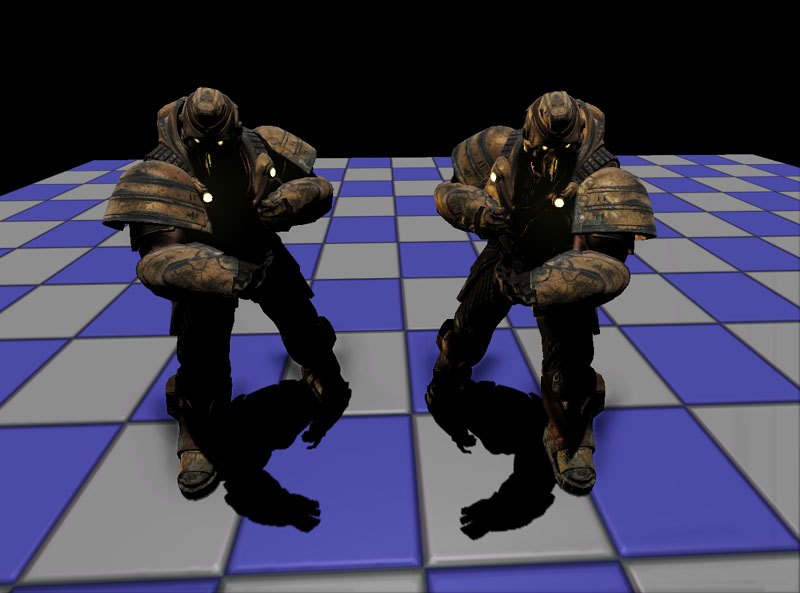
设置骨架网格物体
在您使用镜像功能之前，您必须在您的骨架网格物体中设置镜像表格。如果您在动画集编辑器中打开网格物体，您可以在右侧的‘Mesh(网格物体)’标签下找到镜像相关的设置。第一个要设置的是SkelMirrorAxis，该项设置了针对哪个轴镜像骨架网格物体。注意这是在‘网格物体’的空间里;也就是，在应用RotOrigin 之前 网格物体在3D包中进行创建时的参考系统。下一个要设置的东西是 SkelMirrorFlipAxis 。当您镜像一个骨骼变换时，为了使骨骼不会“从内侧向外侧”旋转，您必须翻转其中的一个坐标轴。具体翻转哪个坐标轴根据您的骨架网格物体的构造决定，这个设置允许您使用默认的坐标轴。然而，您可以在SkelMirrorTable中基于每个骨骼默认地覆盖该项。 这里是一些使用翻转坐标轴的例子。在第一个例子中，骨骼62镜像映射到骨骼37，然后翻转X-轴：
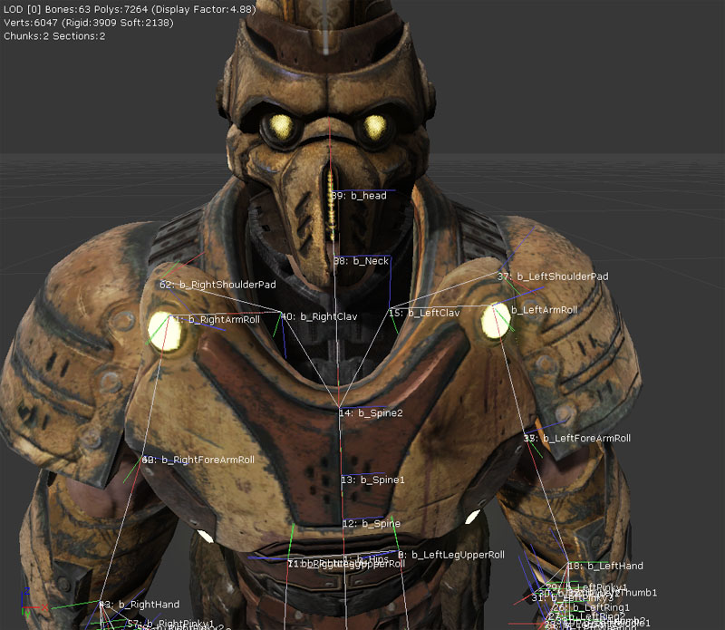
在这个例子中，骨骼9镜像映射到骨骼4，然后翻转X-轴。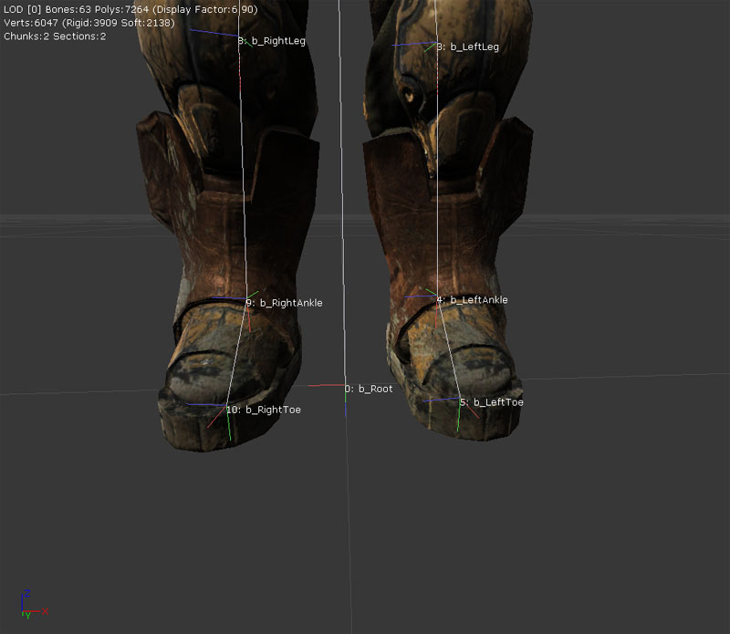
设置骨架网格物体镜像的最耗费时间的部分便是设置 SkelMirrorTable(骨架网格物体镜像表) 。这个表格提供了将每个骨骼映射到另一个骨骼的所有信息。比如，右侧膝盖的源应该是左侧膝盖；脊柱的源是脊柱本身，因为这个骨骼是沿着中心线的（假设这是个对称的哺乳动物的骨架网格物体）。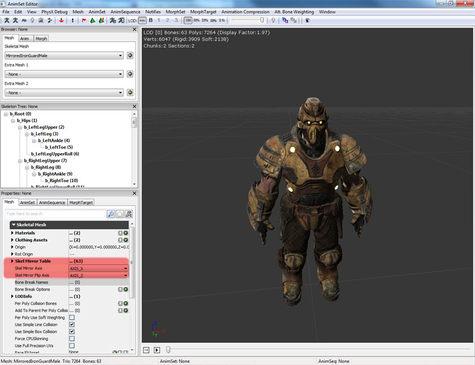
AnimSet编辑器包含着一个尝试自动创建映射表的工具。在‘Mesh(网格物体)’菜单下，选择`Auto-build Mirror Table(自动生成镜像表)'。这将会创建一个表格，当处于参考姿势时，将尝试匹配在镜像平面两侧处在相应位置的骨骼。您必须在运行这个工具之前设置 SkelMirrorAxis(骨架镜像坐标轴) 。对于身体的大部分构成来说该工具都能正常工作，包括腿、手臂、指甲等。如果您在同一个位置有多个骨骼，或者当许多骨骼聚在一起(比如使用许多面部骨骼)时，可能会出现问题。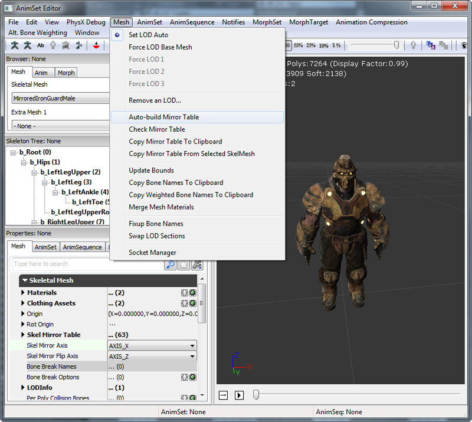
一旦创建了表格，您可以通过按下动画集编辑器上的View Mirrored(查看镜像)按钮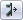
来查看它是如何工作的。 通常您需要对自动生成的表格进行一些修复，从而使得一切更加完美。在‘Mesh(网格物体)’标签下，当您展开 SkelMirrorTable(骨架镜像表格) 部分，您将会看到骨架中每个骨骼的条目。在每个条目项中显示了骨骼的编号，骨骼将要从这个编号获得变换信息。这些条目必须是成对的；如果骨骼88的源是骨骼65，那么骨骼65的源就必须是骨骼88。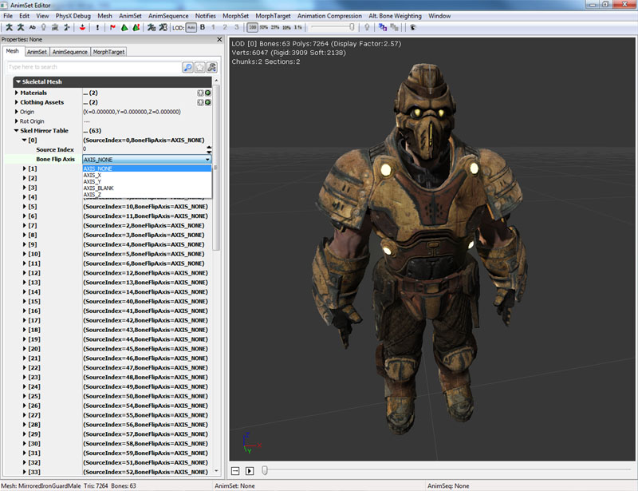
要想查找哪个索引和哪个骨骼相对应，您可以或者在3D视口中打开骨骼名称，并使用Mesh(网格物体)菜单下的Copy Bone Names To Clipboard(复制骨骼名称到剪切板)选项并将该列表复制到文本编辑器中；或者可以在骨架树种查看，括号内的骨骼索引号在和它相关的骨骼旁边。您也可以通过基于每个骨骼来调整 BoneFlipAxis(骨骼翻转坐标) 来覆盖 SkelMirrorFlipAxis(骨架镜像翻转轴) 的默认值。 在骨架树中和骨骼相关联的骨骼索引号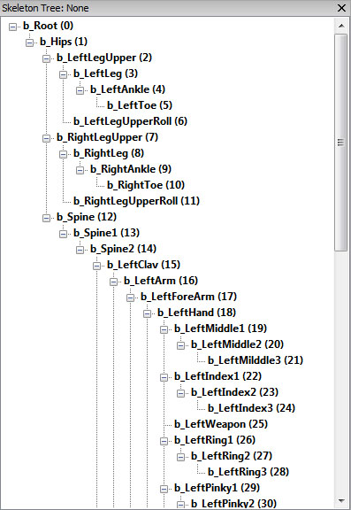
镜像工具
在动画集编辑器的Mesh(网格物体)菜单中，有一些选项可以使我们在使用镜像表进行工作时更容易一些。
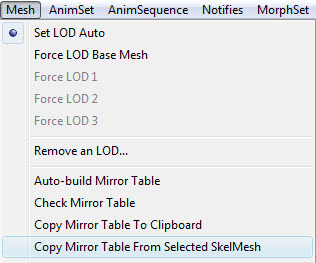
Auto Build Mirror Table(自动生成镜像表)
这个功能将会尝试为当前的网格物体自动地生成一个镜像表格。您可能需要做一些调整工作，但是它可以提供一个很好的基础。当完成后，它也会通知您是否找到了任何错误。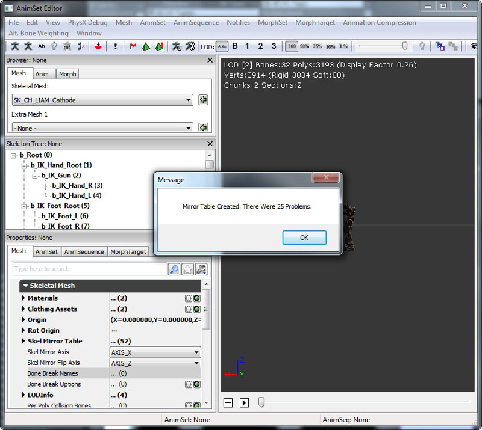
Check Mirror Table (检查镜像表)
将会检查镜像表来查找问题，如果发现任何问题将会显示一个弹出窗口。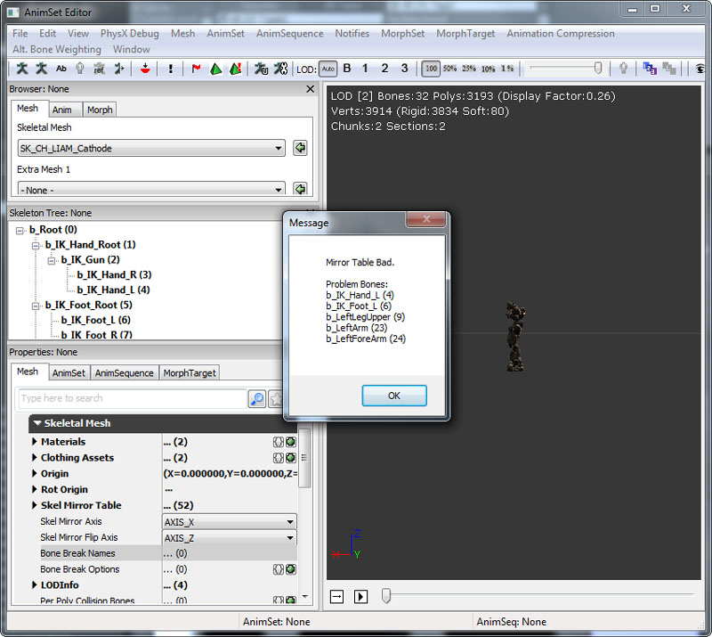
Copy Mirror Table To ClipBoard.(复制镜像表到剪切板)
允许您在文本编辑器中检查镜像表。0: 0 AXIS_NONE 1: 1 AXIS_NONE 2: 2 AXIS_NONE 3: 3 AXIS_NONE 4: 41 AXIS_NONE 5: 5 AXIS_NONE 6: 16 AXIS_NONE 7: 7 AXIS_NONE 8: 8 AXIS_NONE 9: 14 AXIS_NONE 10: 15 AXIS_NONE 11: 11 AXIS_NONE 12: 17 AXIS_NONE 13: 13 AXIS_NONE 14: 14 AXIS_NONE 15: 10 AXIS_NONE 16: 16 AXIS_NONE 17: 12 AXIS_NONE 18: 18 AXIS_NONE 19: 19 AXIS_NONE 20: 20 AXIS_NONE 21: 21 AXIS_NONE 22: 38 AXIS_NONE 23: 39 AXIS_NONE 24: 40 AXIS_NONE 25: 25 AXIS_NONE 26: 42 AXIS_NONE 27: 43 AXIS_NONE 28: 44 AXIS_NONE 29: 45 AXIS_NONE 30: 46 AXIS_NONE 31: 47 AXIS_NONE 32: 48 AXIS_NONE 33: 33 AXIS_NONE 34: 34 AXIS_NONE 35: 51 AXIS_NONE 36: 36 AXIS_NONE 37: 37 AXIS_NONE 38: 22 AXIS_NONE 39: 39 AXIS_NONE 40: 40 AXIS_NONE 41: 41 AXIS_NONE 42: 26 AXIS_NONE 43: 27 AXIS_NONE 44: 28 AXIS_NONE 45: 29 AXIS_NONE 46: 30 AXIS_NONE 47: 31 AXIS_NONE 48: 32 AXIS_NONE 49: 49 AXIS_NONE 50: 50 AXIS_NONE 51: 35 AXIS_NONE
Copy Mirror Table From Selected Mesh.(从选中网格物体中复制镜像表)
当多个网格物体共享同样的骨架时，这是复制镜像表的比较容易的方式，而不需要重新创建它。在动画树中使用镜像
一旦设置骨架网格物体使用镜像，那么就可以在动画树中轻松地使用它。有一个特殊的动画节点类型称为AnimNodeMirror(镜像动画节点)，它有一个输入端和一个输出端。如果您在动画树中插入其中一个节点，它将会镜像输入端动画混合的任何动画。在这种方式中，您可以镜像一个单独的动画或者多个动画的混合，可以在镜像动画和非镜像动画间的混合，从而使得变换更加平滑。
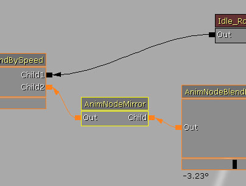
AnimNode(动画节点)中的 bEnableMirroring(启用镜像 标志允许您切换镜像行为的打开和关闭。注意镜像一个动画的性能消耗是非常大的，所以请尽可能少地使用AnimNodeMirrors。